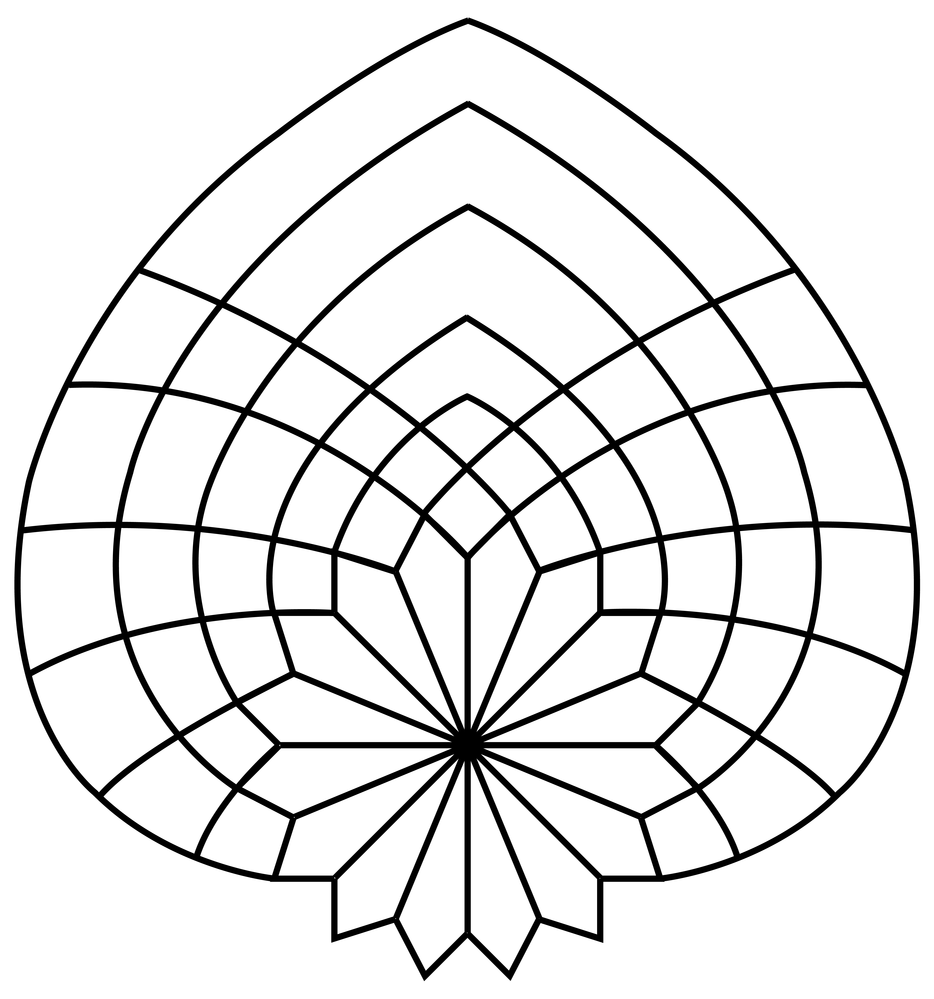
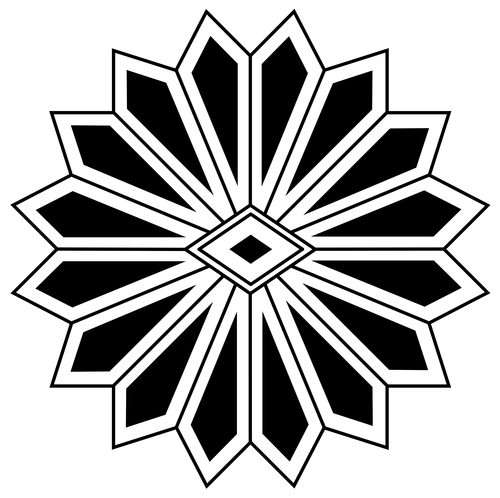

TUNIS
The Project
To design a logo for a tourist city.
The Solution
From the political point-of-view, the flower represents the Tunisian Revolution—dubbed the Jasmine Revolution by western media due to the Jasmine being the national flower. The curved lines coming from the petals represent the ripple effect the citizens are creating. From an art perspective, the flower is seen on ceramic pieces (ie. plates). The subtle changes in color is to bring in the effect of mosaic pieces.
Sketches

Three Variations



Color Renditions
round 1

round 2

Final